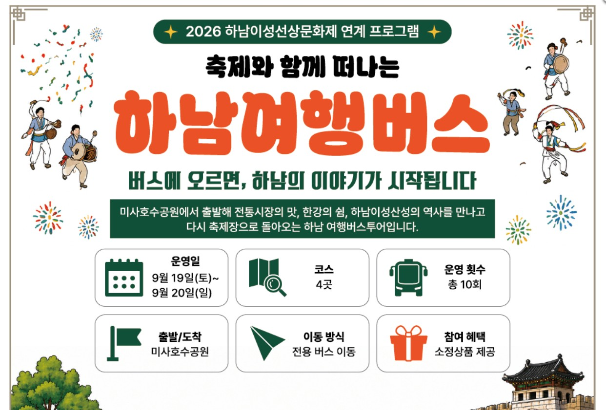
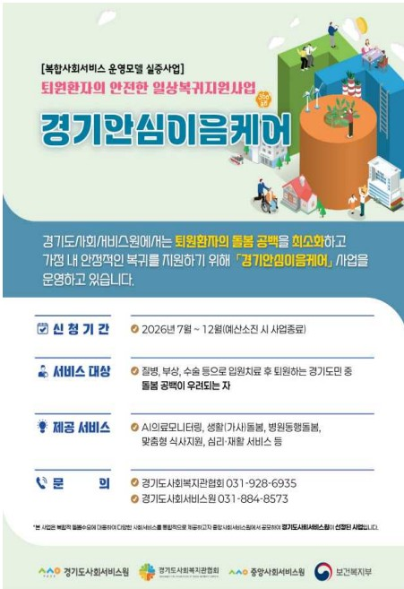

37호 | 2026년 9월 10일 발행
📌 이번 호 주요 목차
 우리동네 국회의원 이광재
우리동네 국회의원 이광재
📰 언론보도
이광재, 하남 교산 신도시 AI 연구캠퍼스 유치 계획…포스텍 등 참여
이광재 국회의원(경기 하남갑)이 등원 100일을 맞아 기자간담회를 열고, 교산 신도시 자족용지에 포스텍, 카네기멜런대(CMU), 싱가포르국립대(NUS)가 함께하는 AI 연구캠퍼스 유치를 추진하고 있다고 밝혔습니다. 이 의원은 교통·교육·의료·도시개발 등 주요 하남 현안 보고와 함께 미래 첨단 자족도시 비전을 피력했습니다.
📌 출처: 국제뉴스 (강정훈 기자)
📰 언론보도
하남 감북·초이동 주민들 이광재의원 간담회 “8·13 부동산대책 신규택지에 포함해 달라”
정부의 8·13 부동산 대책에 따른 수도권 신규택지 공급 계획 발표 후, 서울 송파·강동구와 인접한 하남 감북동과 초이동 주민들이 신규택지 후보지 포함을 요구하고 나섰습니다. 주민들은 이광재 국회의원 등과 간담회를 갖고 감북·초이 지구 지정의 정당성과 지역 개발 요구사항을 전달했습니다.
📌 출처: 경인일보 (문성호 기자)
📝 현장일지
"하남에서 시작해, 경기도로" 하남 현안 및 경기도 예산 협력 논의
이광재 의원이 추미애 경기도지사, 김용만 국회의원과 면담을 갖고 하남시 숙원 현안 해결 및 경기도 관련 예산 확보를 위해 뜻을 모으고 차질 없는 협력을 다짐했습니다.
📌 출처: 이광재 공식 네이버 블로그
🎥 현장일지 (영상)
"3호선 연장부터 덕풍시장까지, 하남의 변화 시작됩니다"
이광재 국회의원의 지하철 3호선 연장 사업 및 덕풍시장 현장 소통 등 하남의 변화와 의정활동 소식을 담은 숏폼 현장 영상입니다.

📌 출처: 이광재 공식 유튜브 (이광재 TV)
📰 하남 지역 주요 뉴스
📰 시정/의회
하남시 위기청소년 상담 대기 10주… 시장 유럽출장 예산 놓고 논란
하남시 자살·자해 위험 위기청소년 상담 대기기간이 인력·사업비 부족으로 10~12주까지 늘어난 반면, 시장 등 일부 공직자들의 유럽 국외출장에 수천만 원의 예산이 투입된 것을 두고 하남시의회 김어진 의원이 5분 자유발언에서 예산 편성 및 집행의 적절성을 강하게 지적했습니다.
📌 출처: 데일리한국 (이성환 기자)
📰 교육/행정
"간판만 달면 된다"…하남교육지원청 우선 개청 속도
하남시와 광주하남교육지원청이 하남교육지원청 우선 개청을 위한 업무협약을 체결하고 150평 규모의 임시청사 공간 확보 및 신속한 개청 절차에 속도를 내기로 합의했습니다.
📌 출처: 한국경제
📰 부동산/기획
하남 지역주택조합, '집값' 보다 먼저 따져야 할 것
하남시 관내에서 지역주택조합 사업이 잇따라 추진되며 관심이 쏠리고 있으나, 분양가 메리트에 앞서 토지 확보율, 자금집행 투명성 및 사업 지연 위험성을 철저히 사전 점검해야 소비자 피해를 피할 수 있다고 진단했습니다.
📌 출처: 중도일보 (이인국 기자)
📰 행정/기획
하남시 농어촌공사 소송, 2013년만 바라보면 책임은 사라지나
하남시와 한국농어촌공사 간 토지사용료 소송 책임 공방과 관련하여, 2013년 계약 갱신 누락과 부실 인수인계 등 과거 원인 규명뿐만 아니라 현 시정 행정의 대응 및 대책 수립 과정에 대한 종합적 책임 의식이 필요하다는 논평입니다.
📌 출처: 디스커버리뉴스 (이명수 기자)
📰 체육/문화
'2026 하남시장기 생활체육대회' 개막···23개 종목 3개월간 열전
하남시 생활체육인들의 화합과 교류의 장인 '2026 하남시장기 생활체육대회'가 통합 개회식을 시작으로 축구·수영·배드민턴 등 23개 종목 약 3개월간의 열전에 돌입했습니다.
📌 출처: 경인매일 (정영석 기자)
📰 의정/도정
오민용 경기도의원 "해외수출기업 지원, 중복 업무 배제하고 예산 효율화해야"
경기도의회 미래과학협력위원회 오민용 의원(더불어민주당, 하남1)이 제393회 임시회 상임위 업무보고에서 도내 영세 중소 수출기업을 위한 물류비·해외인증 등 실효성 있는 맞춤 지원책을 유지하면서, 국가 사무 및 해외 거점(GBC) 중복 사업 정리를 통한 경기도 예산 재구조화와 효율적 운용을 촉구했습니다.
📌 출처: 서울신문 (양승현 리포터)
💬 하남 맘카페 HOT 이슈
2026년 9월 9일 기준 하남 지역 인터넷 커뮤니티(맘카페)에서 가장 조회수와 댓글이 높았던 핫이슈 TOP 3 소식입니다.
1️⃣ '하남교육지원청' 연내 우선 개청 속도 및 임시청사 150평 확보 소식에 학부모 맘카페 환호
현황: 하남시와 광주하남교육지원청이 상생협력 협약을 맺고 하남시청역 인근 종합복지타운에 150평 규모 임시청사를 확보해 하남교육지원청 연내 우선 개청에 박차를 가한다는 소식이 전해졌습니다.
💡 주민 포인트: 독립 교육지원청 설치에 따른 과밀학급 해소, 위례·감일 학군 조정, 통학버스 확대 등 원스톱 교육행정 서비스 기대.
💬 주민 반응: "드디어 독립 교육지원청이 들어서는군요!", "아이들 교육환경과 학군 문제 빨리 개선되길 바란다"며 미사·감일·위례 맘카페 열띤 호응.
2️⃣ 보행 안전 위협하는 '공유킥보드' 무단방치 단속 강화(30분 내 견인) 소식에 미사·감일 맘카페 호응
현황: 하남시와 시의회가 인도 및 등하굣길에 방치되어 등하교 어린이 안전을 위협하는 전동 킥보드 등 개인형 이동장치(PM) 방치 견인 기준 단속 시간을 단축 조치한다는 소식이 전해졌습니다.
💡 주민 포인트: 통학로 및 아파트 단지 입구 무단방치 킥보드 신속 견인 조치 및 아이들의 안전한 도보 등하교 환경 조성.
💬 주민 반응: "아이들 등하굣길에 넘어질 뻔한 적이 한두 번이 아닌데 단속 강화 반가워요", "무단 방치 즉시 치워지길 바랍니다" 학부모 응원.
3️⃣ 10월 준공 앞둔 '하남 어린이영어도서관' ICT 스마트 시스템 구축 소식에 학부모 관심 폭발
현황: 하남시가 오는 10월 준공 예정인 어린이영어도서관의 ICT 스마트 도서관 시스템 구축 및 어린이 영어 신간 도서 대량 구매를 착수했다는 소식이 전해졌습니다.
💡 주민 포인트: 미사·감일·위례 어린이 영어독서 환경 조성, 체험형 디지털 영어 멘토링 프로그램 도입 기대.
💬 주민 반응: "아이들 영어 책 읽히기 좋은 전문 도서관이 드디어 오픈하네요!", "10월 개관일만 기다리고 있어요" 학부모 환호.
🎭 ALL IN 하남라이프
2026년 9월 10일 기준 한눈에 보는 하남시 최신 문화·행사·도서관 프로그램 가이드
🚌 2026.09.19 | 축제/관광
축제와 함께 떠나는 하남여행버스 프로그램 신청 《2026 하남 이성산성 문화제》
"하남의 역사와 자연을 함께 즐기는 특별한 버스 여행!"
2026 하남 이성산성 문화제와 함께하는 하남여행버스 프로그램입니다. 하남의 역사 유적지와 자연경관을 둘러보는 체험형 버스투어로, 축제 현장의 풍성한 프로그램을 함께 즐기실 수 있습니다.
📅 일시: 2026년 9월 19일(토) 10:00 출발
📍 장소: 하남 이성산성 일대
💡 참가신청: 온오프믹스(onoffmix.com)에서 선착순 신청
2026 하남 이성산성 문화제와 함께하는 하남여행버스 프로그램입니다. 하남의 역사 유적지와 자연경관을 둘러보는 체험형 버스투어로, 축제 현장의 풍성한 프로그램을 함께 즐기실 수 있습니다.
📅 일시: 2026년 9월 19일(토) 10:00 출발
📍 장소: 하남 이성산성 일대
💡 참가신청: 온오프믹스(onoffmix.com)에서 선착순 신청

📌 출처: 하남시 / 온오프믹스
📚 2026.09 | 교육/도서관
하남시 미사도서관 독서문화 프로그램 강좌 안내
"미사도서관에서 만나는 알찬 독서문화 프로그램!"
하남시 미사도서관에서 운영하는 독서문화 프로그램 강좌입니다. 다양한 분야의 강좌를 통해 지역 주민의 문화·교육 역량을 높이고 독서를 생활화할 수 있는 기회를 제공합니다.
📍 장소: 하남시 미사도서관
💡 신청: 하남시립도서관 홈페이지에서 신청 가능
하남시 미사도서관에서 운영하는 독서문화 프로그램 강좌입니다. 다양한 분야의 강좌를 통해 지역 주민의 문화·교육 역량을 높이고 독서를 생활화할 수 있는 기회를 제공합니다.
📍 장소: 하남시 미사도서관
💡 신청: 하남시립도서관 홈페이지에서 신청 가능

📌 출처: 하남시 미사도서관

⭐ 2026.09 | 교육/도서관
★위례도서관 9월 프로그램 안내★
"위례도서관에서 9월을 알차게 보내세요!"
하남시 위례도서관의 2026년 9월 독서문화 프로그램 안내입니다. 독서의 달을 맞아 다채로운 프로그램이 준비되어 있으며, 위례동 주민 누구나 참여 가능합니다.
📍 장소: 하남시 위례도서관
💡 신청: 하남시립도서관 홈페이지에서 신청 가능
하남시 위례도서관의 2026년 9월 독서문화 프로그램 안내입니다. 독서의 달을 맞아 다채로운 프로그램이 준비되어 있으며, 위례동 주민 누구나 참여 가능합니다.
📍 장소: 하남시 위례도서관
💡 신청: 하남시립도서관 홈페이지에서 신청 가능
📌 출처: 하남시 위례도서관
🏙️ 2026.09 | 시정/공지
2026년 하남시 청년의 날 기념 「청년 명랑 운동회」 개최
"2026년 하남시 청년의 날 기념 「청년 명랑 운동회」 개최"
2026년 청년의 날을 맞아 지역 청년 간 네트워킹 기회 마련을 위해 2025년 청년 명랑 운동회를 아래와 같이 개최하오니 많은 관심 바랍니다.
📍 문의: 하남시청 ☎ 031-790-5114
2026년 청년의 날을 맞아 지역 청년 간 네트워킹 기회 마련을 위해 2025년 청년 명랑 운동회를 아래와 같이 개최하오니 많은 관심 바랍니다.
📍 문의: 하남시청 ☎ 031-790-5114

📌 출처: 하남시청
🏛️ 공공기관 소식지
🏛️ 하남시청 | 2026.07~12
퇴원환자의 안전한 일상복귀지원사업 "경기안심이음케어"
경기도사회서비스원에서는 퇴원환자의 돌봄 공백을 최소화하고 가정 내 안정적인 복귀를 지원하기 위해 『경기안심이음케어』 사업을 운영하고 있습니다.
신청기간: 2026년 7월 ~ 12월 (예산 소진 시 사업 종료)
서비스 대상: 질병·부상·수술 등으로 입원 치료 후 퇴원하는(퇴원 7일 이내) 경기도민 중 돌봄 공백이 우려되는 분
제공 서비스: AI 의료 모니터링, 생활(가사)돌봄, 병원 동행 돌봄, 맞춤형 식사 지원, 심리재활 서비스 등
제공 기간: 퇴원 후 30일 이내
지원 한도: 1인 100만 원 이내 (소득 기준에 따라 본인부담금 발생 가능)
문의:
— 경기도사회복지관협회: 031-928-6935
— 경기도사회서비스원: 031-884-8573
신청기간: 2026년 7월 ~ 12월 (예산 소진 시 사업 종료)
서비스 대상: 질병·부상·수술 등으로 입원 치료 후 퇴원하는(퇴원 7일 이내) 경기도민 중 돌봄 공백이 우려되는 분
제공 서비스: AI 의료 모니터링, 생활(가사)돌봄, 병원 동행 돌봄, 맞춤형 식사 지원, 심리재활 서비스 등
제공 기간: 퇴원 후 30일 이내
지원 한도: 1인 100만 원 이내 (소득 기준에 따라 본인부담금 발생 가능)
문의:
— 경기도사회복지관협회: 031-928-6935
— 경기도사회서비스원: 031-884-8573

📌 출처: 하남시청
© 2026 우리동네 진짜일꾼 이광재